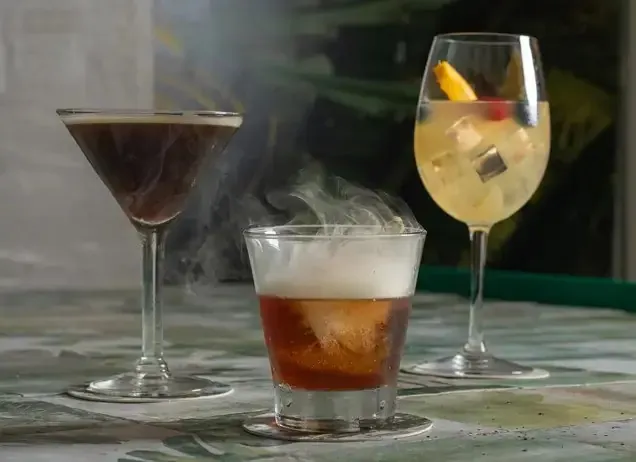

Oceanfront + zero-proof list
1. Casablanca Cafe
Fort Lauderdale Beach · Alhambra St at A1A
Mediterranean-American · in a 1927 villa
- Friday: Open until 11 PM Friday
- Drive: about 35–40 min from home in Boca, arrive about 6:30 PM
- Price: $$–$$$ · mains mostly $29–$49
- Rating: Fort Lauderdale Magazine's 2026 Best Beachfront Restaurant
A Mediterranean-style villa from 1927 sitting right across from the ocean, with an upstairs dining room, a balcony and a piano bar downstairs.
Why it fits you two
It covers the most of what you two like in one place: an ocean view, live piano on Friday, a real zero-proof cocktail list for Caitlin, and plenty of non-fish mains for Don. It's the most relaxed of the three and still feels like a night out.
What to order
Filet Mignon8 oz with blue cheese gratin, creamed spinach and red wine sauce, $49. Don's non-fish pick, or Caitlin's with the sauce on the side
Roasted Half ChickenMoroccan mezze rice bowl with chickpeas, baba ghanoush and tzatziki, $29
Short Rib PappardelleBraised short rib over pappardelle, $32. Another non-fish option for Don
Gluten-free pick
Nothing on the menu is marked gluten-free. The simplest orders are the filet or half chicken (ask about the sauces and the gratin), the Greek salad without pita, and sides of confetti rice or garlic spinach. Tell your server.Caitlin's drink: zero-proof drinks on the menu
Published zero-proof list, $12 each: Alhambra Spritz (rum alternative, strawberry, blueberry, citrus, ginger beer, mint), Sebastian Sunrise (gin alternative, hibiscus, lemon, elderflower) and Casa Smash (tequila alternative, blueberry, raspberry, citrus, agave, San Pellegrino). Heineken 0.0 too.Music
Live piano Fridays from 7:30 PM (The Beth and John Show), per the restaurant's live music page."2026 Best Beachfront Restaurant"Fort Lauderdale Magazine, as shown on Casablanca's website
No reservations. Join the online waitlist on the way so your wait is shorter. Valet from 4 PM on Fridays. Smart casual. 3049 Alhambra St, Fort Lauderdale.
Photos: casablancacafeonline.com